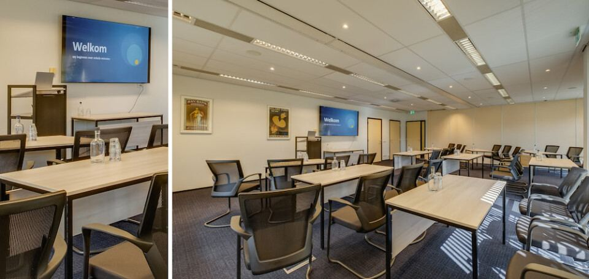

Opleidingen voor financieel dienstverleners
Praktijkgerichte trainingen, masterclasses en meerdaagse leergangen. Kies een opleiding en meld je direct aan via het DFO-opleidingsportaal.
Overzicht cursussen
Hier vind je ons volledige aanbod opleidingen. Niet helemaal duidelijk welke opleiding voor jou de juiste is? We geven je graag advies!
Agenda
Geplande opleidingsdagen. Klik op een datum voor details en aanmelden in het opleidingsportaal.
Beschikbaarheid en actuele data vind je altijd in het opleidingsportaal. Bekijk ook alle opleidingen in het portaal.
NVHP-masterclasses bij Bureau DFO in Hoevelaken
De masterclasses van de NVHP staan open voor iedere financieel adviseur, ook als je geen lid bent van de NVHP. Bureau DFO voert het secretariaat van de NVHP. Voor Erkend Hypothecair Planners tellen de masterclasses mee voor hun permanente educatie: zij volgen per kalenderjaar minimaal drie verschillende masterclasses om de titel te mogen blijven voeren. De prijs ligt in 2026 tussen € 162,50 en € 243,50 per masterclass. Inschrijven gaat via het NVHP-opleidingsportaal; niet-leden maken daar een account aan, leden loggen in zodat hun gegevens al zijn ingevuld. Hieronder staan de masterclasses die bij Bureau DFO in Hoevelaken worden gegeven.
AI Gespreksverslagen
Eerstvolgende: 16 dec 2026 · Hoevelaken · nog 5 plaatsen
Beleggen voor de Hypothecair Planner
Eerstvolgende: 21 dec 2026 · Hoevelaken
De Kracht van Aandacht
Eerstvolgende: 17 dec 2026 · Hoevelaken · nog 5 plaatsen
De Nieuwe pensioenwet
Eerstvolgende: 17 dec 2026 · Hoevelaken
Draagplichtovereenkomst
Eerstvolgende: 8 dec 2026 · Hoevelaken · nog 2 plaatsen
Estate Planning in Box 3
Eerstvolgende: 22 dec 2026 · Hoevelaken
Hypotheekmaster 2026
Eerstvolgende: 21 dec 2026 · Hoevelaken · nog 5 plaatsen
Hypotheken en Vermogen: alles over Box 3
Eerstvolgende: 22 dec 2026 · Hoevelaken
Inventariseren fiscaal verleden 2026
Eerstvolgende: 22 dec 2026 · Hoevelaken
Kan de klant na overlijden in de woning blijven? Van testament naar hypotheekadvies (voorheen Testamentaire Clausules en hun impact op hypothecair advies)
Eerstvolgende: 21 dec 2026 · Hoevelaken
Schrijf een adviesrapport dat klanten wél lezen. Van analyse naar een overtuigend advies. ( voorheen Klantadviesrapport Schrijven)
Eerstvolgende: 27 nov 2026 · Hoevelaken · nog 3 plaatsen
Senioren en Overwaarde
Eerstvolgende: 17 dec 2026 · Hoevelaken
Geplande data in Hoevelaken
Zie je een opleiding die interessant is voor diverse collega’s?
Kies dan voor het gemak van het verzorgen van de opleiding bij jou op kantoor. De docent komt naar jouw locatie toe en zal daar de training verzorgen op de gewenste dag en tijd.
Wat kun je verwachten van ons bij een incompany aanvraag?
Een workshop op maat gemaakt voor jouw onderneming, die past bij het niveau van de medewerkers. Het is bij jullie op kantoor, of een eigen gekozen locatie (dit scheelt reistijd) maar het kan ook bij ons op locatie in Hoevelaken. Doordat het een op maat gemaakte opleiding is, is het mogelijk om langer stil te staan bij de punten die binnen jullie organisatie belangrijk zijn.
Welke workshops zijn beschikbaar voor incompany?
Alle opleidingen die je op onze website ziet zijn beschikbaar voor incompany.
Hoe vraag je informatie aan voor een incompany workshop?
Je kunt een incompany opleiding vrijblijvend aanvragen door een aanvraag te mailen naar: opleidingen@dfobv.nl. Wij nemen dan zo spoedig mogelijk contact met je op.

Welkom op het opleidingsportaal
Je kunt je direct aanmelden voor een opleiding als je een account aanmaakt. Dat is handig, want zo kan je zelf altijd terugvinden voor welke opleidingen je ooit bent aangemeld en wat de status daarvan is.
Inloggen of account makenKorting met servicepakket
Met een DFO Servicepakket krijg je € 95,- korting op 2 of 3 opleidingen per jaar, plus gratis deelname aan het Webinar Actualiteiten.
Bekijk servicepakkettenHeb je vragen over onze opleidingen of lukt aanmelden niet?
Wij helpen je graag verder! Neem contact op met onze afdeling Opleidingen. Wij zijn bereikbaar op 033-258 04 60 of per mail via opleidingen@dfobv.nl.
opleidingen@dfobv.nl